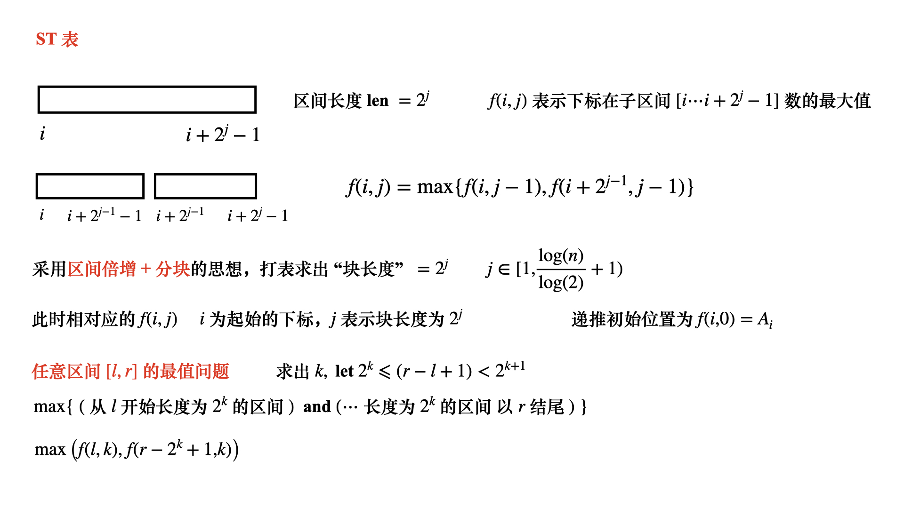
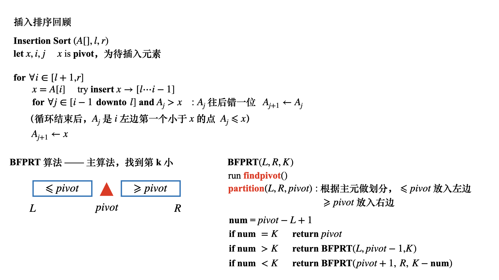
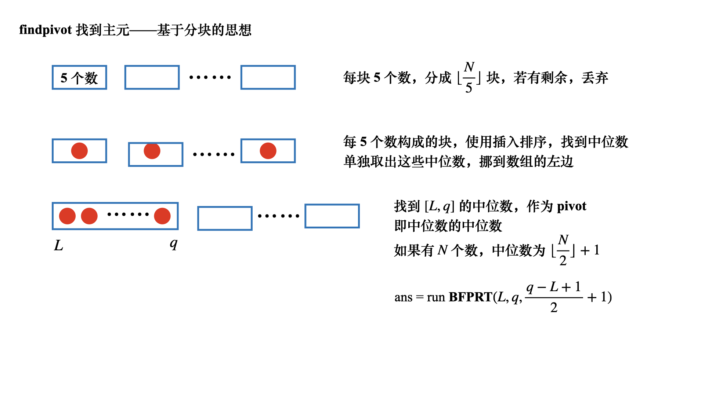
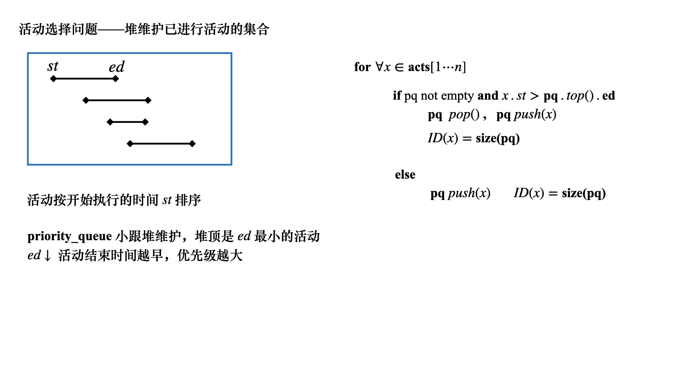
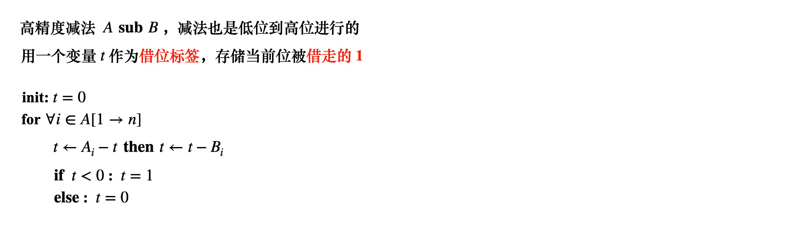
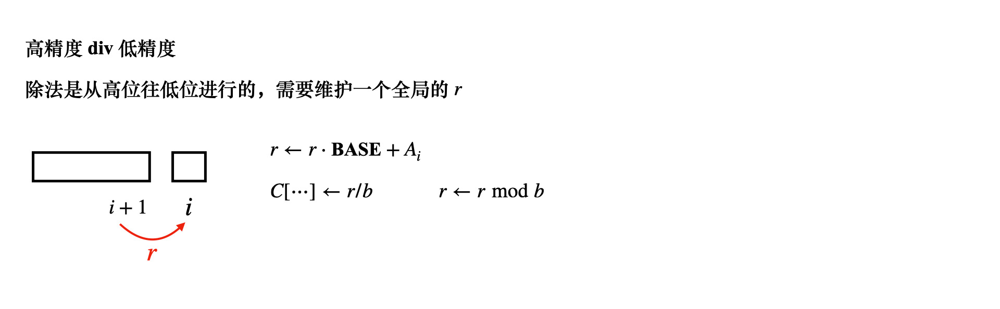
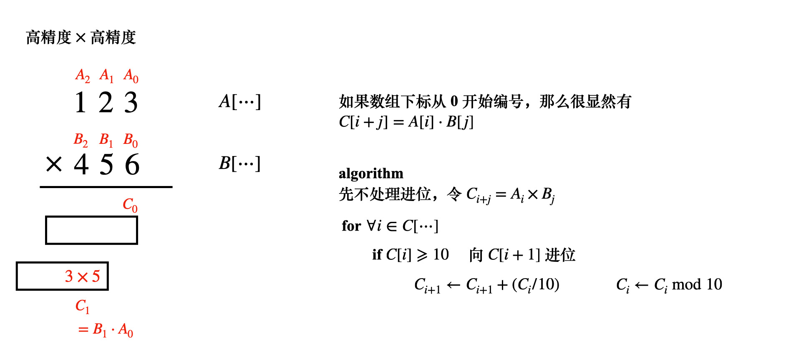
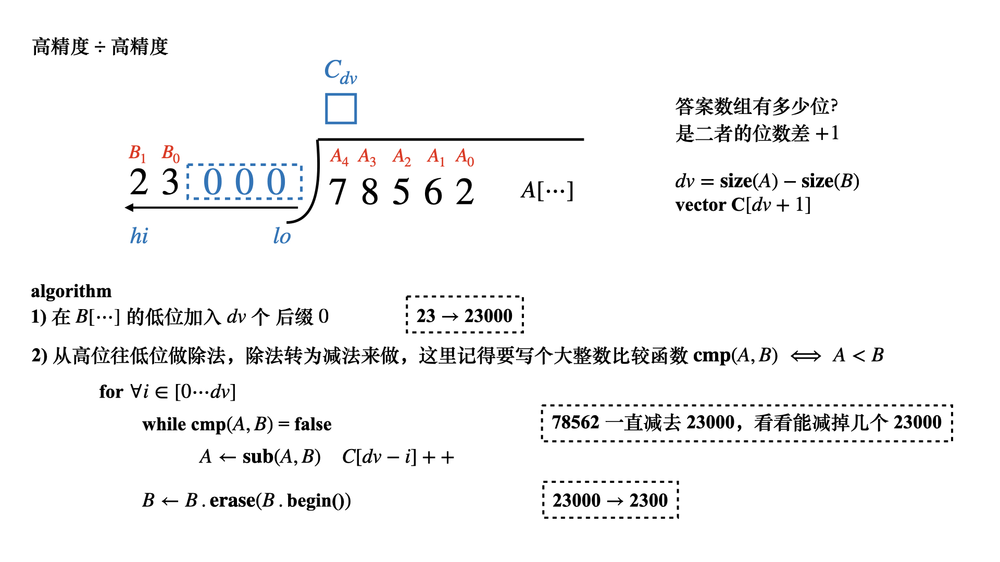
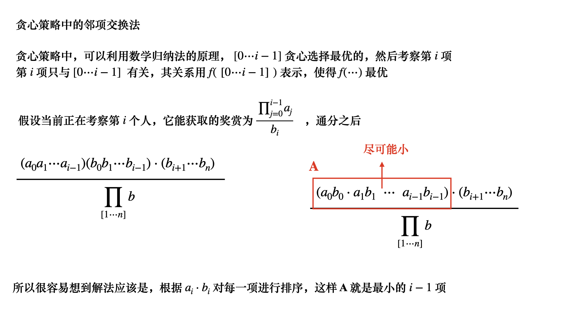
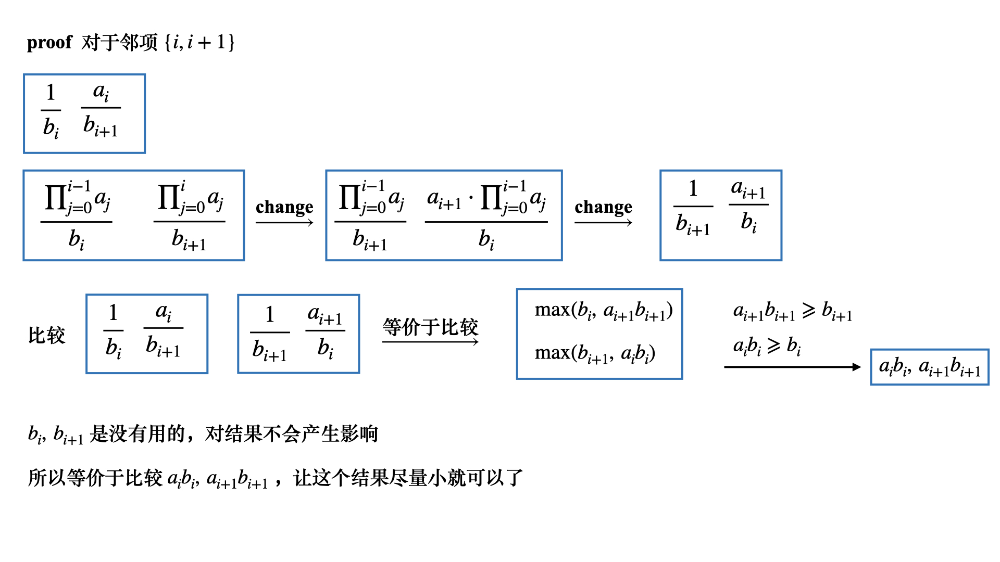

算法设计基础（七）
ST表就是基于倍增算法打表，在处理一些高级算法比如LCA是非常高效简洁的
BFPRT算法用于解决第 k 大数，当然第 k 大数之后还有比如主席树这样的算法
ST表

1 | const int maxn = 1e5 + 10; |
BFPRT 算法
BFPRT 算法可以用于解决区间第 k 大数的问题


1 | const int maxn = 1e5 + 10; |
程序运行结果
1 | Origin array: |
贪心模型：活动选择问题
Acwing111

1 | const int maxn = 50000 + 10; |
高精度
高精度加法
1 | const int BASE = 10; |
高精度减法

1 | vector<int> sub(const vector<int>& A, const vector<int>& B) { |
高精度乘低精度
主循环用一个变量 表示结果，注意以下情况
1 | while(t) C.push_back(t%10), t /= 10; |
1 | vector<int> mul(const vector<int>& A, const int b) { |
高精度除以低精度

1 | vector<int> div(const vector<int>& A, int b) { |
高精度乘高精度

1 | vector<int> mul(const vector<int>& A, const vector<int>& B) { |
高精度和高精度的比较
1 | check A < B, return true |
高精度除以高精度
高精度除法重点理解

1 | vector<int> div(vector<int> A, vector<int> B) { |
邻项交换与贪心选择
本文高精度算法的应用，以贪心算法中的
邻项交换来分析
Acwing114


1 | const int maxn = 1000 + 10; |
本博客所有文章除特别声明外，均采用 CC BY-NC-SA 4.0 许可协议。转载请注明来自 算法小站！
打赏
 微信
微信 支付宝
支付宝
相关推荐


评论